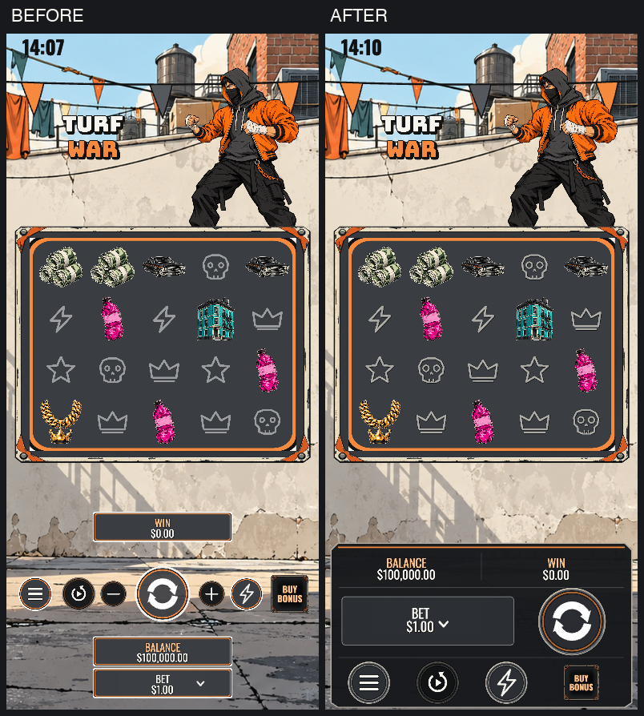

2026-11-03。改善版已上傳並發布 front v35／math v7；未重新送審，角色素材與商店圖不變。發布收據：publish/RELEASE-RECEIPT.json。

真實 fixture books，正常手機與桌機 Turbo；包含一般中獎、Bruiser、Big Score、Lookout、Muscle、Kingpin 完整進出。這不是平台真實玩家連線或實體手機驗證。
| Viewport | Book | 時間 | 結束 |
|---|---|---|---|
| 390×844 | 64 | 3.5s | PASS |
| 390×844 | 1 | 3.5s | PASS |
| 390×844 | 1546 | 4.0s | PASS |
| 390×844 | 11 | 48.7s | PASS |
| 390×844 | 29 | 63.8s | PASS |
| 390×844 | 50 | 94.1s | PASS |
| 1280×720 | 64 | 2.5s | PASS |
| 1280×720 | 1 | 2.5s | PASS |
| 1280×720 | 1546 | 2.5s | PASS |
| 1280×720 | 11 | 45.2s | PASS |
| 1280×720 | 29 | 60.0s | PASS |
| 1280×720 | 50 | 90.8s | PASS |
{
"platform_updated": false,
"upload_package_updated": false,
"math_changed": false,
"scope": [
"Turf app-local portrait console",
"4 native stencil glyphs +4 native control plates",
"boombox scatter waves",
"frame entry weighting and value-impact audio",
"BGM crossfade and shared mix dynamics"
],
"full_volume_stress": {
"peak": 0.5579167604446411,
"rmsMax": 0.26454571850258407,
"clipped": 0,
"samples": 163840
},
"mute": {
"peak": 0,
"rmsMax": 0,
"clipped": 0,
"samples": 34816
},
"replay": {
"book": 64,
"complete": true,
"wallet_rounds": 0
},
"multiplier_sync": [
{
"type": "framesUpdate",
"first_value_ms": 172.39999997615814,
"first_cue_ms": 172.39999997615814
},
{
"type": "framesDoubled",
"first_value_ms": 214.19999992847443,
"first_cue_ms": 214.19999992847443
}
],
"gameplay": [
{
"viewport": {
"w": 390,
"h": 844
},
"books": [
64,
1,
1546,
11,
29,
50
],
"complete": true,
"mix": {
"peak": 0.592757523059845,
"rmsMax": 0.2790720858849373,
"clipped": 0,
"samples": 14905344
},
"errors": [],
"network_errors": []
},
{
"viewport": {
"w": 1280,
"h": 720
},
"books": [
64,
1,
1546,
11,
29,
50
],
"complete": true,
"mix": {
"peak": 0.58343905210495,
"rmsMax": 0.28340014051202034,
"clipped": 0,
"samples": 13993984
},
"errors": [],
"network_errors": []
}
],
"limits": [
"Local published-book fixtures, not a live player RGS session",
"Chrome touch/viewport emulation, not physical iOS/Android hardware",
"No claim of reviewer approval or subjective audio acceptance",
"4 intentional flat-fill warnings retained: board ground, typography logo, sticky marker, spin plate"
]
}
型別 0 errors / 0 warnings；完整 build 與 guard 通過。320×568、390×844、640×420、1280×720 無頁面捲動與執行例外；觸控選 $2 並以 $2 開局；社交模式金額選單無 BET 用語。靜音測得0輸出。倍數換值與聲音在同一個8ms取樣窗。手機 replay book64 完成至 finalWin，wallet rounds=0。
素材掃描仍有4個低色數警告，分別是盤面底色、文字Logo、sticky記號、spin plate；保留清楚的底色與形狀，沒有加雜訊去消除警告。這項檢查不代表人工審核結果。
完整資料：ui-report.json、multiplier-sync.json、after-390-report.json、after-1280-report.json、final-source-sha256.json、final-build-sha256.json。preview 的正式資產逐檔與 build 比對相同；stub 只注入 dist 的 index。